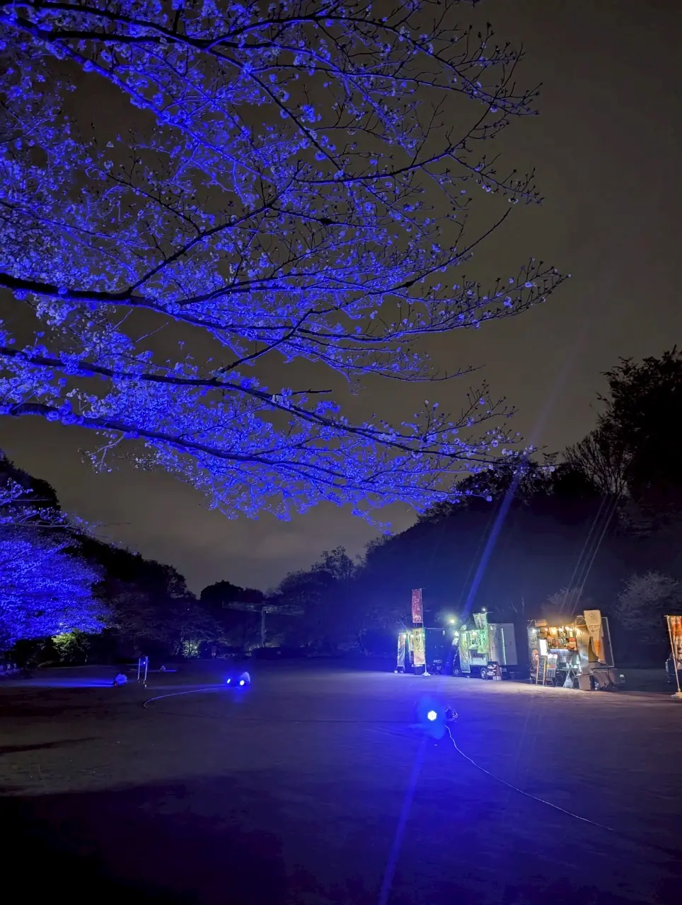

WARM BLUE
MACHIDA
ABOUT
SPOTS
SCHEDULE
GALLERY
CONTACT
モーションを抑える
TOP
トップ
ABOUT
活動について
SPOTS
ブルーライトアップ
SCHEDULE
スケジュール
GALLERY
ギャラリー
CONTACT
参加・お問い合わせ
HOME
GALLERY
GALLERY
町田に生まれた、
青い時間。
ブルーライトアップと青い花火の記録。写真をクリックすると拡大表示されます。
青い花火｜芹ケ谷公園
ペデストリアンデッキ
花火を見上げる人々｜芹ケ谷公園
ブルーに染まる夜桜
青い桜と花見｜芹ケ谷公園
国際版画美術館
まちなかのイルミネーション
実行委員会のメンバー
青いやまゆり号（D51）

夜の芹ケ谷公園
CLOSE ×
次は、あなたもこの景色の中に。
参加・お問い合わせ
 WARM BLUE MACHIDA
WARM BLUE MACHIDA
WARM BLUE MACHIDA
WARM BLUE MACHIDA